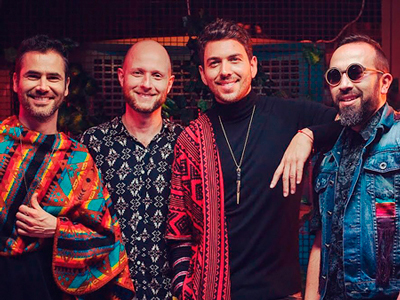
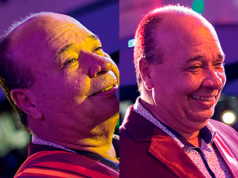

Actualidad Boga

¡UN LEGADO!
Tomado de @sanalejo.oficial
Muchos recordamos a la agrupación Sanalejo (2007) cuando el tropi-pop estaba en la cima, pues su legado como banda sigue vigente, ahora con cuatro integrantes siguen enamorando a los que disfrutaron de esa maravillosa ola músical. Esta agrupación manizaleña se encuentra estrenando su sencillo -Tayrona- un tema de pop urbano que le encantará a sus fanáticos.

¡LA FAMILIA ES PRIMERO!
Tomado de @yelsid
En este momento el cantante Yelsid se encuentra retomando su carrera artística después de una pausa, su principal objetivo es equilibrar este nuevo inicio con tiempo de calidad para su familia, pues no quiere renunciar a los momentos importantes de ninguna de estas dos facetas de su vida. Por ahora se encuentra lanzando su sencillo -Ya no es la misma- un tema con el despecho urbano que caracteriza al paisa.
¡SOLTERO Y CON UNA DESPECHADA!
Tomado de @alanramirezoficial
El pasado 11 de abril el artista Alan Ramírez de género popular lanzo su más reciente sencillo -Despechada- un tema que asegura el artista será el himno de las mujeres que quieren olvidar aquellos hombres que les pagaron con traición, el lanzamiento se llevó a cabo en el reconocido bar Plaza México, allí los asistentes disfrutaron de esta canción y como dato adicional la protagonista de su video es Paola Usme portada en Revista Boga edición 90. Por último el artista sorprendió con la noticia de que se encuentra soltero

DE CANTANTE A ACTOR?
Tomado de @posadarecords_
Luis Alberto Posada está dando mucho de qué hablar, pues nos contó que pronto estará estrenando su propia película, así es. Posada ahora estará en los cines, pero esto no es todo, los negocios también son lo suyo, es por eso que lanzará su propia línea de perfumes. Y como si esto fuera poco, en menos de lo que esperamos, este artista estará estrenando canción; este nuevo tema se ha demorado, ya que a último minuto tuvo que cambiarle el título a su canción, pues se iba a llamar: “Como si nada”, y ya hay canciones sonando bastante con ese nombre.